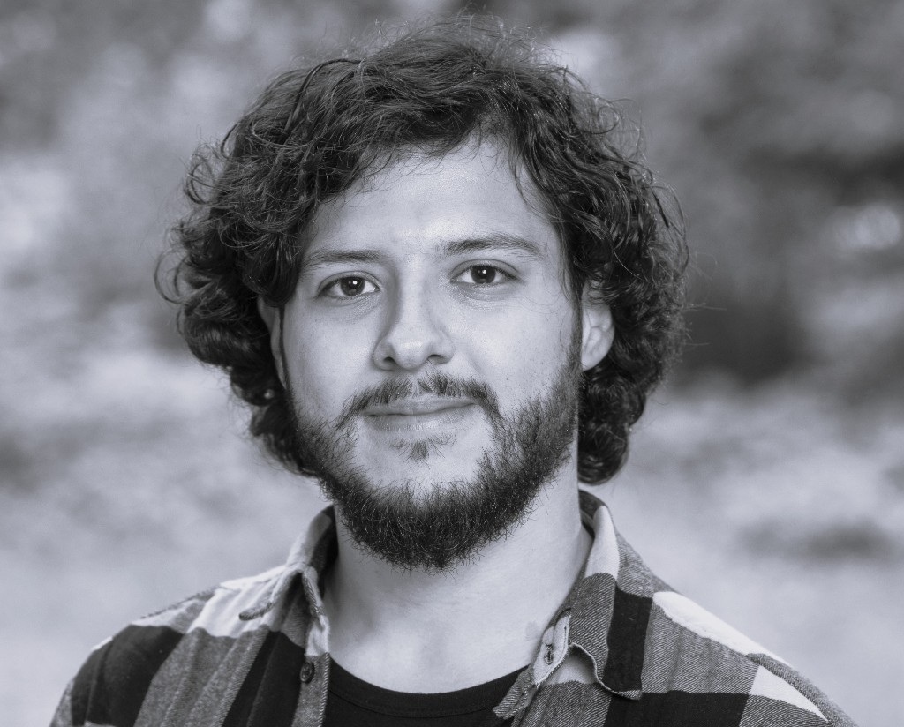
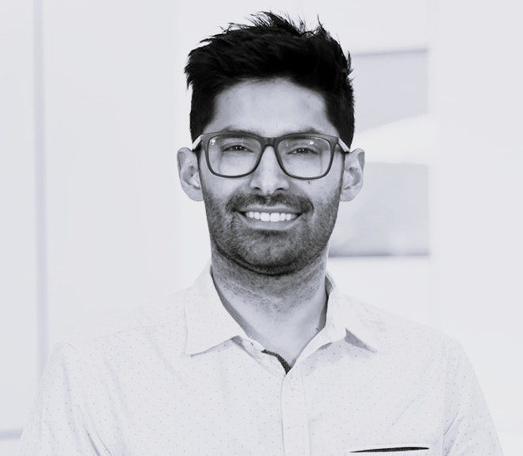

Who Gets Picked? Gender Disparities and Institutional Prestige in Education Research Funding Networks
![]()
August 13, 2026
Research Team

Matías Montero
PhD Student
Department of Education,
University of Oxford
United Kingdom
Alis Oancea
Professor of Philosophy of Education and Research Policy
Department of Education,
University of Oxford
United Kingdom
Lars-Erik Malmberg
Professor of Quantitative Methods in Education
Department of Education,
University of Oxford
United Kingdom

Diego Palacios
Associate Professor
Society and Health Research Centre,
Universidad Mayor
Chile
Gender and Team Formation
- From participation to directed nomination
- Women’s representation in feminised fields does not imply egalitarian practices in academia (Abramo et al., 2021; Silander et al., 2013; Hanasono et al., 2019).
- This study focus on research team formation as a hierarchical scientific collaboration: PIs bring together a team of COIs; in educational research.
- Female PIs as more active team-builders
- Women receive fewer grants, which limits their opportunities to become PIs (Bukstein & Gandelman, 2019; Witteman et al., 2019).
- H1: Yet women who do become PIs may assemble more inclusive teams, as female researchers tend to have more collaborators (Bozeman & Gaughan, 2011).
- Lower selection as COI
- In a PI-controlled nomination process, H2: we expect women to be less often selected as COIs.
Gender Homophily in Team Selection
- Same-gender nomination
- Coauthorship patterns show gender homophily (Espinosa et al., 2022; Kwiek & Roszka, 2021; Ortega et al., 2024).
- This pattern persists across male-dominated, gender-neutral, and female-dominated fields, though its strength varies with field composition (Torre et al., 2025).
- Homophily also appears in citation practices (Potthoff & Zimmermann, 2017) and in reviewer/editor assignments (Schick et al., 2022).
- H3: We therefore expect PIs to be more likely to select COIs of the same gender in funded education teams.
Institutional Assortativity
- Prestige matching in team ties
- Direct evidence on research-project team formation is limited, but collaboration and hiring patterns suggest that ties concentrate among actors of similar academic prestige (Lee et al., 2026; Zhang et al., 2022).
- Prestigious institutions occupy central positions in academic networks; institutional hierarchies channel contact, recognition, and recruitment along status lines.
- Institutional similarity may also reflect shared social foci—circuits, and organisations that structure opportunity, rather than preference alone (Feld, 1981; McPherson et al., 2001).
- H4: We therefore expect research-team ties to be more likely between researchers affiliated with institutions of similar prestige.
Gendered Constraints on Access Across Prestige Strata
- Stronger prestige matching among female PIs
- Cross-prestige collaboration may depend on sponsorship, visibility, elite-network membership, and informal professional ties, resources to which women may have more restricted access (Murray et al., 2025; Kandiko et al., 2017).
- Male PIs may therefore recruit from a broader range of prestige strata, while female PIs face a more restricted set of accessible COIs.
- H5: Prestige matching may thus reflect gendered opportunity structures: institutional prestige similarity should be more strongly associated with PI-COI tie formation among female than male PIs.
Research Gap and Contribution
- What remains unexplored?
- Research on gender inequality in science has primarily examined productivity, grant success, and career outcomes (Huang et al., 2020; Nielsen, 2016), offering less insight into how gender inequality is relationally organised.
- Institutional effects leave open whether women and men obtain the same relational returns when forming research team networks as PIs.
- Empirical focus
- We model directed PI-to-COI relations in education research projects.
- Contribution
- We conceptualise gender inequality in funded research teams as an institutionally conditioned relational process, and test whether institutional prestige similarity operates differently for female and male PIs.
Context: The National Fund for Scientific and Technological Development (FONDECYT)
Chile’s main competitive research funding scheme
FONDECYT is the main funding scheme for basic and scientific–technological research across all fields since 1981.
| Scheme | Career stage / focus | Max. annual funding (USD) | Duration | Research staff |
|---|---|---|---|---|
| Postdoctoral | Early post-PhD insertion under an institutional sponsor | ~35,900 | 2–3 years | No formal co-investigator team |
| Initiation | First independent grant; early-career consolidation | ~33,300 | 2–3 years | Support staff; no formal co-investigators |
| Regular | Established / mid- to senior-career researchers | ~63,300 | 2–4 years | May include co-investigators and a fuller research team |
Note. Only FONDECYT Regular allows the PI to nominate co-investigators formally. This analysis focuses on Regular education networks where team composition is explicitly modelled as PI → co-investigator nominations.
Research Design
Data source and scope
Analysis uses data on FONDECYT research teams that were awarded funding. This means that the network excludes research teams that applied but were not funded.Directed network structure
The network is modelled as a directed graph: PIs nominate co-investigators.Nomination opportunity (
can_send/inactive)
Researchers can still be selected as COIs, but can send new nominations only when they have a PI team-formation opportunity (can_send= 1). Otherwise they areinactiveas senders: outgoing change is suppressed, while incoming selection remains possible.Temporal definition of ties
Collaboration ties are retained for the full duration of each funded project, according to the number of years specified in the grant.Analytical sample
The longitudinal network includes 744 researchers observed across 9 waves from 2017 to 2025.Analytical strategy
Stochastic Actor-Oriented Models (SAOM): to analyse the evolution of longitudinal research project networks.
Data
Source (a): ANID funding registry (2016-2025)
Full record of awarded research instruments from the ANID’S Chilean Ministry of Science.Source (b): Team rosters of awarded projects
Full record of research team members in educational research, both: early childhood, primary & secondary education, and higher education.Source (c): Institutional characteristics
University sector, institutional prestige (accreditation years), and institutional territorial profile were drawn from the Chilean Ministry of Education’s open-data enrolment registry for higher education.
Variables: Node covariates
Female
Binary indicator of sex assigned at birth from administrative records (0 = male; 1 = female).Institutional prestige
Number of accreditation years awarded by the Chilean Commission for Quality Assurance (research, teaching, institutional management, internal quality assurance, and community engagement).University sector
Dummy indicator: 1 = private institution; 0 = public institution.Institutional territorial profile
Binary indicator: 1 = primarily metropolitan, 0 = primarily regional.
Variables: Dyadic covariates
Same institution
Both researchers are affiliated with the same institution.Prior COI–COI coparticipation
Both researchers previously co-appeared as co-investigators on an awarded research project.Same Education evaluation panel
Both researchers are part of a research project in the same grant assessment panel (early childhood, primary & secondary education vs higher education).
How PI Nominations Work in the Network
Purple = female; dark teal = male.
Team Formation by Year
| Year | Observed researchers |
PIs who can form a team |
New PI→COI ties |
Mean team size |
Female PIs (%) |
Female COIs (%) |
|---|---|---|---|---|---|---|
| 2017 | 91 | 26 | 69 | 3.8 | 57.7 | 55.9 |
| 2018 | 161 | 21 | 58 | 3.8 | 71.4 | 55.3 |
| 2019 | 261 | 31 | 99 | 4.0 | 38.7 | 49.3 |
| 2020 | 300 | 26 | 89 | 4.2 | 38.5 | 52.8 |
| 2021 | 312 | 26 | 65 | 4.1 | 53.8 | 50.0 |
| 2022 | 449 | 73 | 177 | 4.2 | 46.6 | 51.2 |
| 2023 | 483 | 39 | 105 | 4.1 | 43.6 | 54.2 |
| 2024 | 502 | 37 | 102 | 4.1 | 45.9 | 53.5 |
| 2025 | 551 | 43 | 123 | 4.2 | 58.1 | 55.8 |
Note. Observed researchers are those with at least one PI or COI tie in that year. PIs who can form a team are Education Regular PIs in execution year 1. New PI→COI ties exclude continuing nominations from ongoing projects. Mean team size is the PI plus nominated COIs among PIs with a team that year. Female PI % is among PIs with a team-formation opportunity; female COI % is among researchers receiving at least one nomination.
SAOM Results
SAOM Evaluation Effects
Table 1. Log-Odds Estimates from SAOM Effects on the FONDECYT Education Network
| Parameter | Estimate | SE | p-value |
|---|---|---|---|
| Structural effects | |||
| Reciprocity | 4.87*** | 0.25 | < .001 |
| Indegree popularity | -2.81*** | 0.24 | < .001 |
| Outdegree activity | -1.39*** | 0.11 | < .001 |
| Transitive ties | 2.66*** | 0.23 | < .001 |
| Node covariate effects | |||
| Female (ego) | -1.71*** | 0.24 | < .001 |
| Female (alter) | -0.15* | 0.07 | 0.032 |
| Same gender | 0.25*** | 0.07 | < .001 |
| Institutional prestige similarity | 1.36*** | 0.26 | < .001 |
| Same university sector | 0.93*** | 0.09 | < .001 |
| Same institutional territorial profile | 1.19*** | 0.10 | < .001 |
| Same Education evaluation panel | -0.21 | 0.21 | 0.317 |
| Female (ego) × Institutional prestige similarity | 1.15** | 0.38 | 0.002 |
| Dyadic covariate effects | |||
| Prior COI–COI coparticipation | 1.97*** | 0.29 | < .001 |
| Same institution | -0.08 | 0.21 | 0.703 |
Note. Rate parameters omitted.
*p < .05; **p < .01; ***p < .001 (two-tailed Wald test).
Discussion
- Gendered inequality in team formation
- Among researchers who became PIs, women formed less extensive teams than men, contradicting H1: the female-ego effect is negative, so the result runs in the opposite direction to the predicted higher PI activity.
- Women were significantly less likely to be selected as COIs, supporting H2 in the expected direction.
- Gender inequality thus concerns who is selected as COI and how PI status is converted into collaboration ties, rather than women’s participation alone.
- Gender clustering within a feminised field
- PIs disproportionately selected same-gender COIs, supporting H3.
- Numerical feminisation therefore does not eliminate gendered network boundaries in team formation (Espinosa et al., 2022; Torre et al., 2025).
- Institutionally embedded opportunity structures
- Team ties clustered by institutional prestige, sector, and territorial profile, supporting H4.
- Collaboration opportunities remain institutionally bounded (Feld, 1981; McPherson et al., 2001).
Discussion (cont.)
- Gendered access across prestige strata
- Prestige similarity structured female PIs’ selections more strongly than male PIs’, supporting H5.
- This pattern may reflect women’s more restricted access to cross-prestige collaborators (Kandiko et al., 2017; Murray et al., 2025).
Limitations
- Current limitations
- Gender conceived as a binary variable.
- The analysis also focuses only on awarded grants, rather than the full population of submitted proposals, including both successful and unsuccessful applications.
- Modelling eligibility and career trajectories
- Current model specification assumes that all researchers appearing in the data are nominable throughout the 2017 to 2025 period.
- This simplifies more complex career dynamics, such as doctoral entry, research drop out, death, international migration, or withdrawal from the FONDECYT research circuit.
Thank you!
Matías Montero
📧 matias.montero@education.ox.ac.uk
Support from the Economic and Social Research Council (ESRC) [grant number ES/Y001761/1] through the Grand Union Doctoral Training Partnership (GUDTP) and UK Research and Innovation (UKRI) is gratefully acknowledged.

Backup: What a tie is, and how it is coded
- Directed unipartite Education network (FONDECYT Regular), PI → team members, waves 2017–2025.
- A tie i → j in year t is a project nomination.
- Free nomination occurs in execution year 1; later project years are typically frozen as structural ones.
| Code | Meaning | In RSiena |
|---|---|---|
| 1 | Free nomination observed (execution year 1) | Present; changeable in principle |
| 0 | Possible but unobserved (includes non-PIs as senders) | Ordinary absence; may become 1 |
| 10 | Structural zero (Postdoc/Starter grant senders in restricted years only) | Impossible dyad; not in the change process |
| 11 | Structural one (PI→COI in years 2…end of the project) | Frozen tie; cannot dissolve |
- 10 no longer locks entire non-PI sender rows.
- Non-PIs keep ordinary 0s, so they can still be selected as alters.
- Who may send new nominations is handled in the rate function, not by mass structural zeros.
Backup: Who may nominate, and up-only dynamics
- Opportunity:
can_sendandinactive- For the interval m → m+1, covariates are taken from wave m.
can_send= 1 if i has a free-nomination window (execution year 1) in m+1. Example: a team starting in 2022 hascan_send= 1 in 2021.inactive= 1 −can_send.- RateX(
inactive) = −100 (fixed, uncentered): ifinactive= 1, the outgoing change rate is ≈ 0; ifinactive= 0, the period-specific rate applies. - Inactive researchers remain available as alters. Opportunity is in the rate function, not
egoX(can_nominate).
- Up-only free dynamics
- Among free dyads (both ends in {0,1}, no 10/11): ties form (0→1), but there are no free dissolutions (1→0 = 0 in all periods).
- With
allowOnly = TRUE, RSiena respects this monotonicity and omits outdegree (density).MaxDegree = 20caps simulated outdegree at the observed maximum. - The matrix says what is possible or observed; RateX +
inactivesays who may nominate in each interval; up-only says free-risk ties accumulate rather than cycle through formation and dissolution.
8th European Conference on Social Networks (EUSN 2026), Norrköping, Sweden